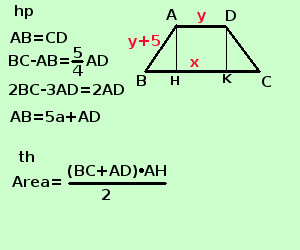

|
soluzione Risolvere il seguente problema In un trapezio isoscele la differenza fra la base maggiore ed uno dei lati obliqui e' 5/4 della base minore. Sapendo che la differenza fra il doppio della base maggiore ed il triplo della base minore e' il doppio della base minore stessa e che il lato obliquo supera di 5a la base minore, trovare l'area del trapezio  se indico con x la base maggiore e con y la base minore per l'ultima relazione il lato obliquo sara' y+5aBC = x AD = y AB = y + 5a x - (y+5a) = 5/4 y 4x - 4y - 20a = 5y 4x - 9y = 20a 2x - 3y = 2y 2x - 5y = 0
risolvo con il metodo di metodo di addizione, moltiplico la seconda equazione per -2 e sommo in verticale
ottengo y = 20a sostituisco nella seconda equazione -4x + 10 · 20a = 0 4x = 200a x = 50a
quindi BC = 50a AD = 20a AB = y + 5 = 25a BH = (BC-AD)/2 = (50a-20a)/2 = 15a applico il teorema di Pitagora al triangolo rettangolo ABH per trovare AH AH2 = AB2 - BH2 = 625a2 - 225a2 =400a2 AH = √400a2 = 20a Area = (BC+AD)·AH /2 = (50a + 20a)·20a /2 =10000a2 l'area vale 10000a2 |